About the swissEO Browser
The swissEO Browser is a web viewer for the swissEO satellite products of swisstopo: the Sentinel-2 surface reflectance mosaics (swissEO S2-SR) and the products derived from them, such as the Vegetation Health Index (VHI) and the NDVI change maps. You can look at the images, compare dates, compute vegetation and water indices, get statistics and time series for your own areas, and download images and data.
Its user interface copies the Copernicus Browser of the European Copernicus Data Space Ecosystem, so if you know that one, you will feel at home. The difference is under the hood: the swissEO Browser is a single web page without a server of its own and without a login. Everything is calculated on the fly in your web browser, directly from the swissEO Cloud Optimized GeoTIFFs (COGs) on data.geo.admin.ch. Nothing is precomputed: when you change a layer, a date or a setting, your browser reads the needed pixels and computes the result.
This help has two parts. Part A is a short tutorial for your first visit: it takes about ten minutes. Part B describes every function in the order of the Copernicus Browser documentation. You can open this page at any time with the i button at the top right of the map.
Part A: Tutorial for your first visit
No prior knowledge needed. Open the swissEO Browser in a second window and follow along.
1What you see
The window has two parts: the menu on the left and the map on the right. The menu has two tabs, Visualise (choose date and layer) and Info (about the data, feedback). The map shows the selected layer over a background map; the buttons on the map are the tools.
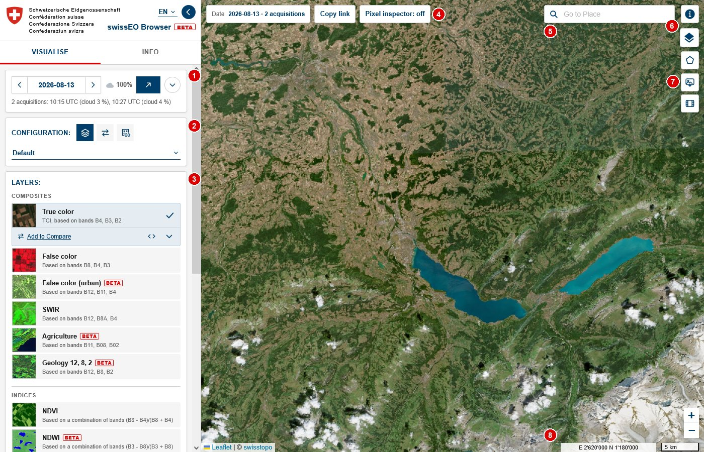
- 1Date: the selected day, the arrows for the previous / next day with data, and the calendar
- 2Configuration: groups of layers for a topic, and the Compare and WMS / WMTS views
- 3Layers: click one to show it on the map
- 4Date on the map, Copy link and the Pixel inspector
- 5Go to Place: search a town, address or mountain
- 6Help (this page) and the basemap button
- 7Tools: area of interest, image download, timelapse
- 8Zoom, mouse position in Swiss coordinates (LV95) and scale bar
2Go to a place
Click into Go to Place at the top right of the map and type at least two letters of a place name, an address, a municipality, a canton or a mountain. Results appear as you type; click one (or use the arrow keys and Enter) and the map zooms there and drops a pin. The × clears the search.
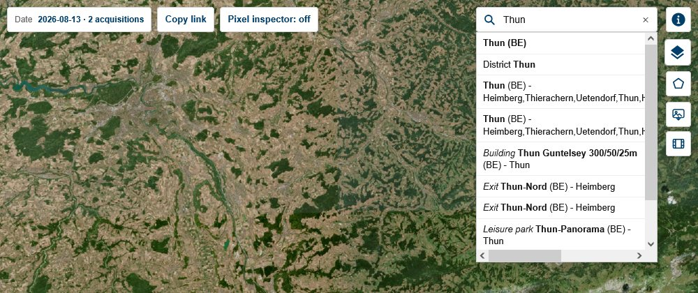
3Choose a date
Sentinel-2 passes over Switzerland every few days, so there are images for many, but not all days. At the top of the menu:
- ‹ and › jump to the previous or next day with data for the area you see;
- the arrow button ↗ jumps to the latest image;
- the round button opens the calendar: days with data are marked; the slider sets the maximum cloud cover.
Below the date you see how many acquisitions (satellite passes) there are on that day and how cloudy they were.
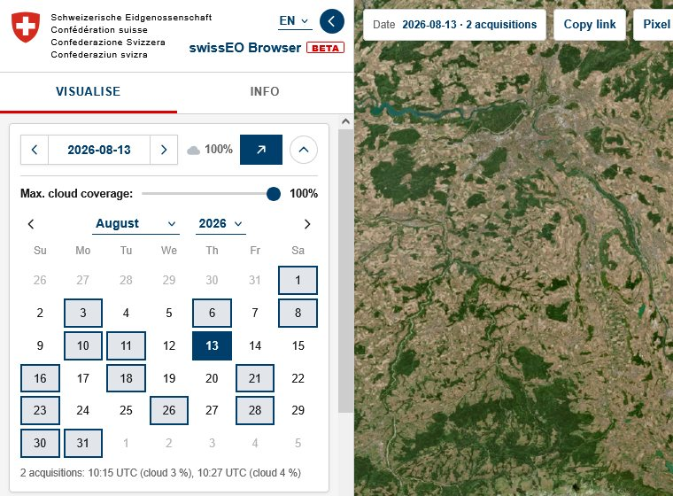
4Choose a layer
A layer is one way of looking at the data. True color shows the landscape as your eyes would see it. Other layers make things visible that the eye does not see: False color shows healthy vegetation in bright red, the NDVI shows how green and vital plants are, the Moisture index shows water stress.
- Pick a Configuration in the pull-down: Default (all general layers), Agriculture, Drought, Drought 2026 (with stories) or Forest.
- Click a layer in the list. It appears on the map and gets a check mark. Clicking it again hides it.
- Open the layer menu with the chevron ⌄ on the active layer: you get a description, the legend and the settings.
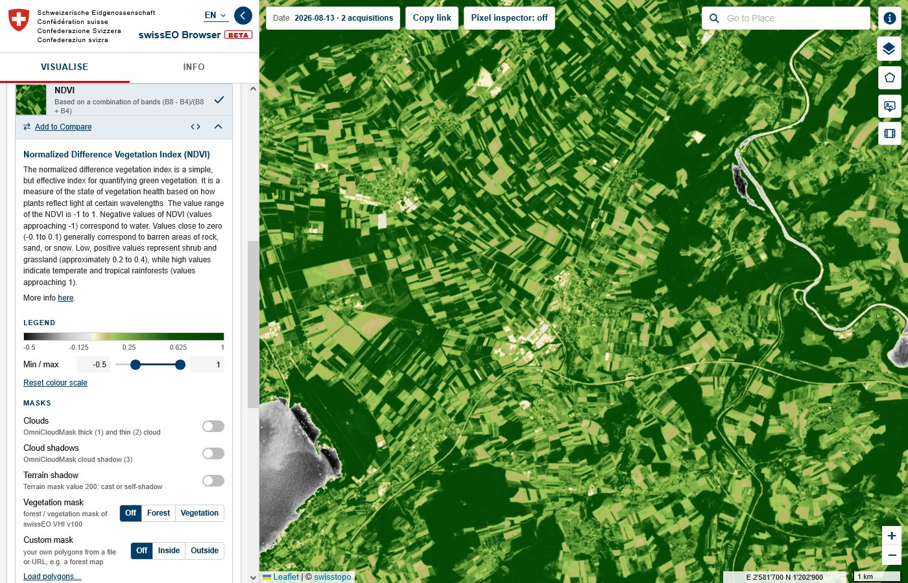
5Read the value of a pixel
Click Pixel inspector: off at the top of the map to switch it on, then click on the map. A box shows the values at that spot: the position, the reflectance of every band, the index value of the layer, the cloud and terrain information and the forest / vegetation mask. Click the button again to switch it off.
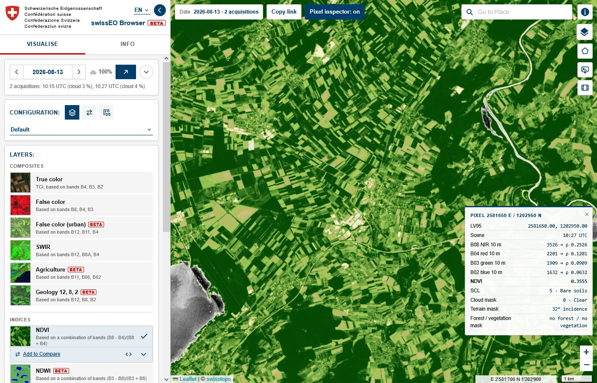
6Draw an area and get statistics
- Click the pentagon button (area of interest) at the top right of the map.
- Choose the rectangle or the polygon and draw on the map (a polygon ends with a double click or a click on its first point). You can also import a file, see Area of interest.
- A small toolbar appears next to the button. Click the chart icon for Statistical info.
You get the mean, median and other statistics with a histogram for the selected date, and a time series: the values of the area over a date range, which you can download as CSV.
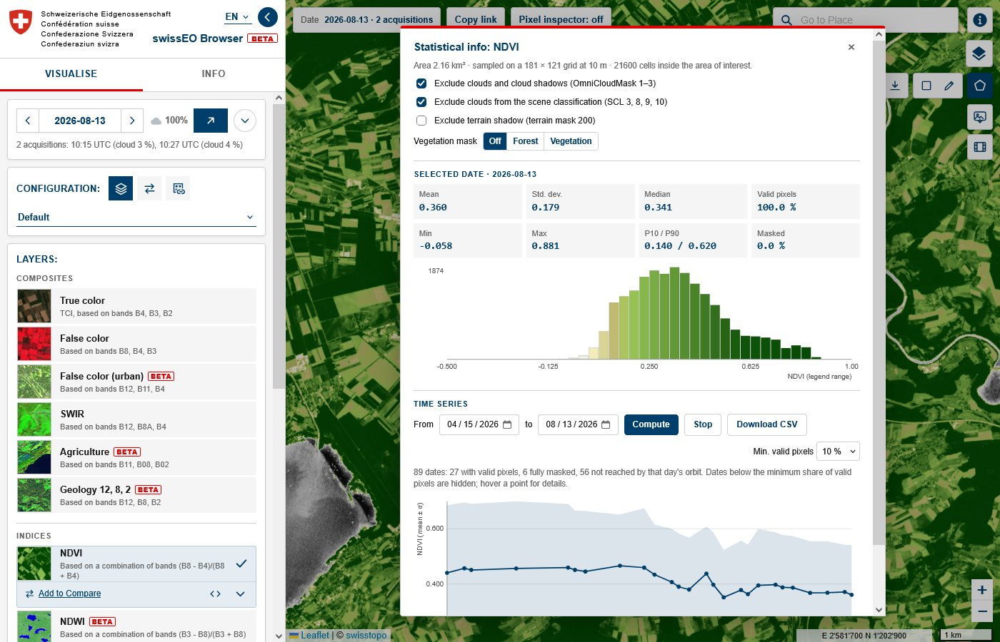
7Download an image
The picture button opens Image download. Basic saves what you see as PNG or JPG, with date, scale bar and legend if you like. Analytical gives you GeoTIFF files with the actual values for GIS software such as QGIS. High-res print renders the view for printing.
8Share your view
The address in your browser always describes exactly what you see: place, date, layer and settings. Click Copy link at the top of the map and paste the link into an e-mail or chat. Whoever opens it sees the same map.
Part B: All functions
The sections follow the Copernicus Browser documentation. Only the functions that the swissEO Browser has are described; see section 4 for what is not included.
1Visualization
Layers and configurations
A configuration (called theme in the Copernicus Browser) is a list of layers for a topic:
| Configuration | Layers |
|---|---|
| Default | composites (true color, false color, urban, SWIR, agriculture, geology), indices (NDVI, NDWI, moisture index, NDSI, NBR, AOT), swissEO VHI forest and vegetation, swissEO NDVIdiff, scene classification, cloud mask, terrain |
| Agriculture | true color, false color, NDVI, EVI, Barren Soil, Moisture Stress, moisture index, agriculture, SAVI |
| Drought | true color, NDVI, moisture index, swissEO VHI, swissEO NDVIdiff and NDVIz, NDDI and NDDI change, NDVI Analyst |
| Drought 2026 | true color, moisture index, NDWI, Moisture Stress, NDVI, SWIR, urban, Highlight Optimized Natural Color, plus the highlights |
| Forest | true color, NDVI, swissEO VHI forest, VHI cumulative deficit, VHI days in extreme stress, swissEO NDVIdiff and NDVIz, NDVI Analyst, NBR, moisture index, Forest Disturbance Classification |
The true color is the image delivered with each swissEO mosaic. All other layers are computed from the bands in your browser, or read from the swissEO products (VHI, NDVIdiff, NDVIz). When several satellite passes cover the same day, they are joined into one mosaic, the most recent on top.
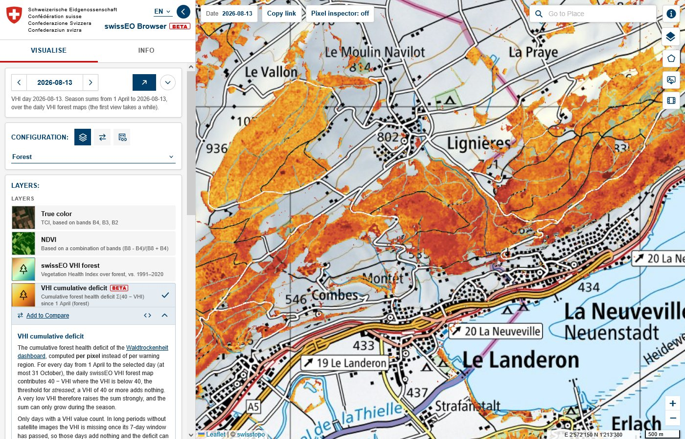
Date and cloud filter
A link without a date opens on the latest day with data. The arrows and the calendar only offer days whose images actually reach the map view, so they update when you move the map. The cloud slider in the calendar hides days whose mosaic is cloudier than the chosen percentage. For the swissEO products with only a few dates per year (NDVIdiff, NDVIz) the product nearest to the selected date is shown, and the text below the date says which one.
Layer menu: legend, masks, effects
The chevron on the active layer opens its menu:
- Description and a More info link; the </> button shows the formula and the scaling used.
- Legend with an adjustable colour scale (min / max) and Reset colour scale.
- Masks: hide clouds and cloud shadows (cloud mask of the swissEO mosaic), terrain shadow, and everything outside the forest or outside all vegetation (Vegetation mask). The custom mask uses your own polygons.
- Effects and advanced options: gain, gamma, the red / green / blue ranges and the opacity. For the band composites also Look (standard stretch or the True color optimized tone curve of the Copernicus Browser) and Adaptive gain, which avoids saturated snow and clouds.
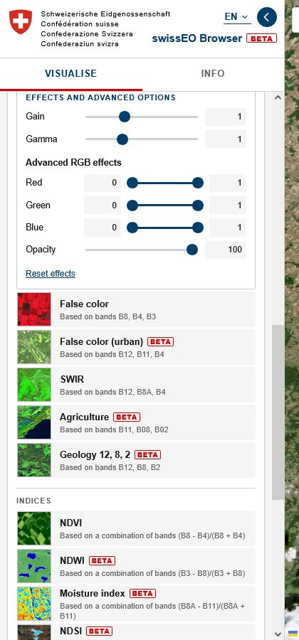
Custom masks: your own geometries
You can restrict any layer to your own polygons, for example a forest map, the parcels of a farm or a nature reserve. In the layer menu, under Custom mask, load a file (GeoJSON, KML/KMZ, GPX, WKT or a zipped Shapefile) or a URL. Then choose Inside (show the data only inside the polygons) or Outside (only outside). The mask applies to the map, compare, statistics, exports and the timelapse. A mask loaded from a URL is part of copied links; a mask from a file stays on your computer.
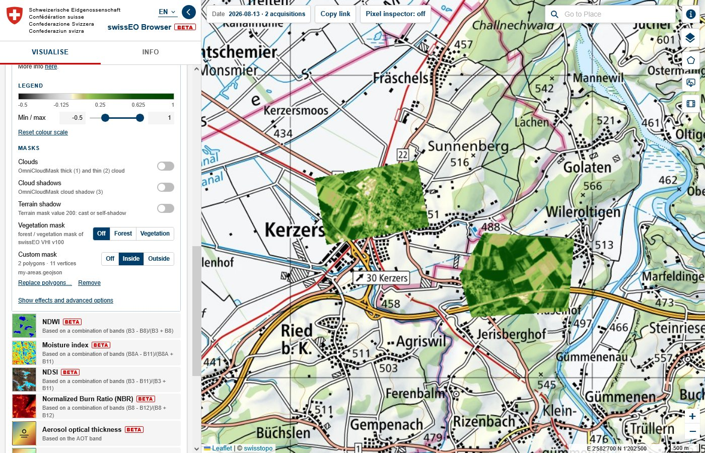
Comparing visualizations
Click Add to Compare under the active layer to put it, with its date and settings, into the compare list. Add another layer or the same layer on another date. Then open the Compare view (the ⇄ icon next to the configuration). Two effects are available: Split, with a handle on the map that you drag to swipe between the layers, and Opacity. Entries can be reordered, removed or zoomed to.
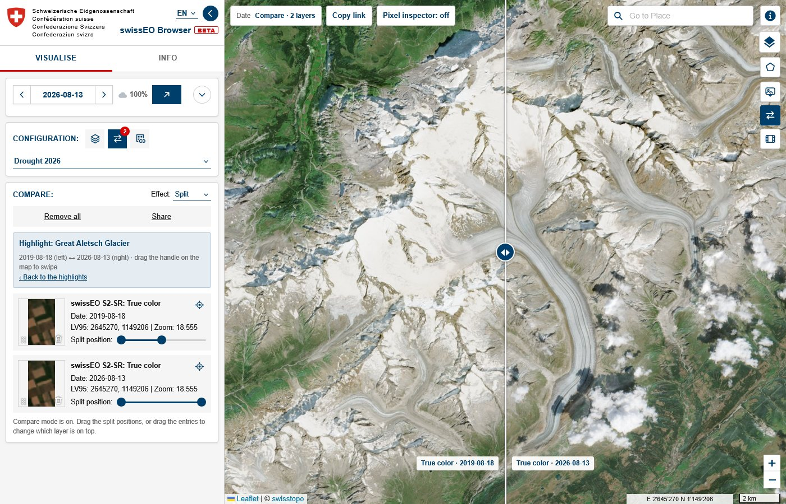
Highlights
The configuration Drought 2026 has highlights: short stories with a before and after comparison. Click a card to open the place with the two dates side by side; the chevron on the card shows the text and its source.
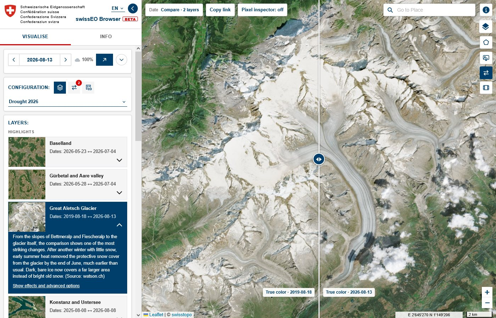
WMS / WMTS services
The third icon next to the configuration opens WMS / WMTS: layers of other map services on top of the basemap. The swisstopo WMS (all layers of map.geo.admin.ch) is preset; the pull-down lists the external providers of map.geo.admin.ch, and + adds any other WMS or WMTS address. Search the layers, click one to show it, and use Add to Compare to compare it with a satellite layer.
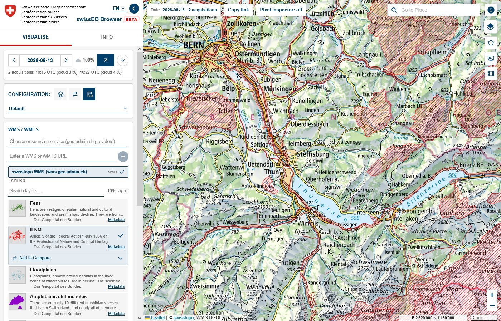
Basemaps and labels
Hover the layer button at the top right of the map (below the i) to choose the basemap: Map (swisstopo national map), SWISSIMAGE (aerial photo), Map Grey or None. Labels OSM draws roads and place names above the satellite data.
2Tools
The tools are the buttons at the top right of the map.
Place search
Go to Place searches places, addresses, municipalities, districts and cantons with the location search of map.geo.admin.ch. A result zooms to its extent, or to its point at a scale of about 1:25,000.
Area of interest
The pentagon button opens three options: import, rectangle and polygon. Drawing again adds another polygon; the vertices stay editable. The import accepts:
- files: GeoJSON, KML / KMZ, GPX, WKT and zipped Shapefiles;
- a URL to such a file (also API or WFS addresses that return GeoJSON); the server must allow access from other websites (CORS);
- a pasted geometry, an MGRS or GEOREF grid cell, or a bounding box in WGS84, LV95 or LV03 coordinates.
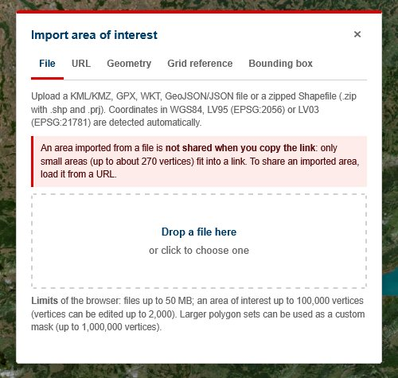
The toolbar of the area copies the geometry, shows the area, centres the map, opens the statistics and the spectral explorer, and downloads the area as GeoJSON. Small areas are part of copied links; large areas from a file are not (the toolbar then shows ⚠ not in link), while areas loaded from a URL are shared as that URL.
Statistical info and time series
For the area of interest and the current layer:
- Selected date: mean, standard deviation, median, percentiles and a histogram in the colours of the legend;
- Time series: the mean over a date range, read date by date (the least cloudy first). Clouds are judged over your area, not over the whole scene; you can also exclude clouds with the scene classification and restrict the area to forest or vegetation. The chart and the values can be downloaded as CSV.
Some layers report differently: the two-date layers (NDDI change, NDVI Analyst) give the difference and, for the NDVI Analyst, its forest change report; the VHI season layers give the season curve.
Spectral explorer
The mean surface reflectance of all twelve Sentinel-2 bands over the area, with ± one standard deviation, as a chart and as CSV. It shows the spectral signature of what is in your area: water, forest, crops or bare soil.
Pixel inspector
Switch it on at the top of the map and click a spot. For the satellite layers it shows the band values (stored number and reflectance), the index value, the scene classification, cloud and terrain mask and the vegetation mask; for the swissEO products the product value. See Fig. 5.
Image download
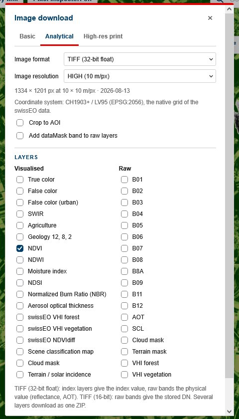
- Basic: the current view as PNG or JPG, with captions (data source, date, scale bar), an optional description, the label overlay, the legend and the area of interest; also in compare mode.
- Analytical: several layers and raw bands at once, for the view or the area of interest, at 40, 20 or 10 m or a custom resolution (up to 2500 × 2500 pixels). Formats: PNG, JPG or GeoTIFF in Swiss coordinates (LV95): 8-bit, 16-bit (the stored values) or 32-bit float with the index or physical values for your own analysis. Several files are zipped.
- High-res print: the view rendered for a printed size (width, height and DPI).
Timelapse
The film button builds an animation of the current layer over the area of interest (or the view):
- choose the time range and Select 1 image per orbit, day, week, month or year; the month buttons skip seasons you do not want (for example winter);
- click Search: per interval the image with the best coverage of your area and the clearest sky is chosen;
- check the list: thumbnails, cloud cover and coverage of your area; the sliders filter cloudy or incomplete images;
- play the preview (speed, fade, legend, captions) and download it as GIF or video.
There are no hard limits: a weekly glacier animation over ten years works, it just takes a few minutes.
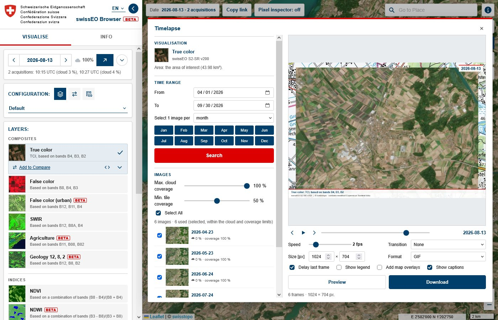
3Sharing and feedback
Links
The address bar is updated with every change: place, date, cloud filter, configuration and layer, the open layer menu, colour scale, masks, effects, the compare list, the WMS / WMTS layer, the basemap and the area of interest. Copy link copies it. Links use Swiss coordinates (LV95) for the map centre, as map.geo.admin.ch does.
Feedback and issues
At the top of the Info tab, below the not for operational use notice:
- Feedback writes an e-mail to the swissEO team (in your mail app, Gmail or Outlook Web);
- Report an issue / improvement opens a GitHub issue form of one of four kinds: Fix or change a layer, Change a text or translation, Report a general problem or Suggest an improvement. This needs a free GitHub account.
Both already contain the link to exactly the view you are looking at and a summary of what is on the map, so one or two sentences are enough. A value from the pixel inspector helps a lot when something looks wrong.
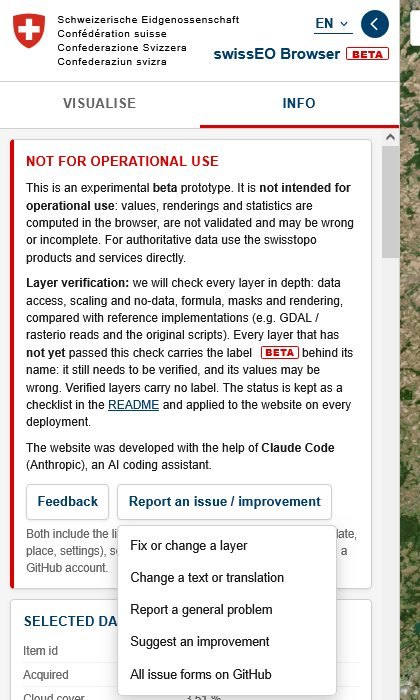
4Data, coordinates and limits
Data
- swissEO S2-SR: Sentinel-2 surface reflectance mosaics of Switzerland at 10 m, with cloud mask, terrain mask and true color image, since 2017;
- swissEO VHI: daily Vegetation Health Index for forest and all vegetation, relative to 1991–2020;
- swissEO NDVIdiff and NDVIz: NDVI change compared with the previous year, and NDVI anomaly, for the forest, at the end of July, August and September;
- basemaps and the location search of map.geo.admin.ch.
The Info tab lists the acquisitions of the selected date with their metadata and the scaling of all products.
Coordinates
All positions you see are Swiss coordinates LV95 (EPSG:2056): the mouse position, the pixel inspector, the links and the import defaults. Only GeoJSON downloads use WGS84, as the GeoJSON standard requires.
Not included compared with the Copernicus Browser
Product search and download of the original products, pins, 3D view, the measuring tool, custom scripts and user accounts are not available. Other satellite missions are not included; the swissEO Browser shows the swissEO products only.
Limits
- Everything is computed in your browser: large areas, long time series and large downloads take a while, and a fast internet connection helps. A first view of a new area or date is slower than the next ones.
- Areas of interest can have up to 100,000 vertices and files up to 50 MB; areas from files are only part of a link when they are small.
- Layers marked BETA are not yet verified; the VHI season layers count only days with a VHI value.